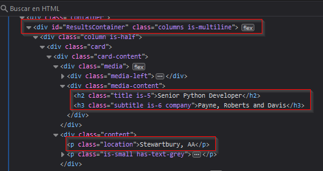

En este proyecto, me aventuré en el fascinante mundo del web scraping utilizando Python y Beautiful Soup. El objetivo principal fue extraer información de una página web estática de manera automatizada, lo que me permitió recopilar datos relevantes para su posterior análisis o uso.
Al emplear Python como lenguaje de programación principal y Beautiful Soup como biblioteca de análisis HTML, pude desarrollar un crawler eficiente y poderoso. El proceso implicaba navegar por el código HTML de la página objetivo, identificar y extraer los elementos deseados, como texto, enlaces o imágenes, y luego procesar esa información según mis necesidades específicas.
Este proyecto no solo me proporcionó una sólida comprensión de la manipulación de datos web con Python, sino que también me permitió explorar conceptos como la estructura del documento HTML, la selección de elementos mediante selectores y la gestión de datos extraídos.
A lo largo de esta breve introducción, compartiré mi experiencia, los desafíos enfrentados y las soluciones implementadas durante el desarrollo de este emocionante proyecto de crawler en Python.
🧠 ¿Qué es un Crawler?
Un crawler, también conocido como "rastreador web" o "araña web", es un programa de software que navega por la web de manera automatizada, siguiendo enlaces de una página a otra. Su objetivo principal es indexar y recopilar información de diversas páginas web para su posterior análisis o indexación en motores de búsqueda. Los crawlers son fundamentales para la indexación y la recuperación de información en la web, ya que facilitan la recopilación de datos de manera eficiente y sistemática.
⚠️ Desventajas de los crawlers
Los crawlers enfrentan algunas desventajas al tratar con páginas que no son estáticas:
Dificultad para rastrear cambios dinámicos:
Posibilidad de rastrear información irrelevante o duplicada:
Necesidad de actualización constante:
Los crawlers pueden tener dificultades para detectar cambios en el contenido de las páginas dinámicas, ya que estas se generan mediante scripts o consultas a bases de datos en tiempo real. Esto significa que los cambios en el contenido pueden no ser capturados de manera oportuna o precisa.
Debido a la naturaleza dinámica del contenido, los crawlers pueden encontrarse con dificultades para distinguir entre contenido relevante y contenido redundante o irrelevante que se genera dinámicamente. Esto puede resultar en la indexación de información duplicada o poco útil.
Los crawlers deben adaptarse continuamente a los cambios en la estructura y el comportamiento de las páginas dinámicas para garantizar un rastreo efectivo. Esto puede requerir una inversión adicional en desarrollo y mantenimiento de software para mantener el crawler actualizado.
Por esta razón, para este proyecto he decidido utilizar una página web estática para así asegurar que este proyecto sea 100% funcional y que pueda servir de base para otros futuros proyectos.
Reconocimiento
Paso 1:
Antes de empezar con nuestro Crawler, primero tenemos que escoger la página objetivo. Yo usé la página de [Real Python](https://realpython.com), usando el siguiente link: https://realpython.github.io/fake-jobs/
En este ejemplo usé esta página ya que a como se muestra en los entrenamientos de Real Python, esta es la mejor forma de aprender ya que la página es 100% estática por lo que no va a haber ningún cambio futuro que afecte el desempeño del Crawler.
Paso 2:
Una vez dentro se debe de identificar la información en la cual estamos interesados:

Paso 3:
Cuando ya tenemos nuestros objetivos identificados, se procede a buscarlos en el HTML haciendo uso de la secuencia de teclas CTRL + SHIFT + I.
Paso 4:
Explorando las Herramientas para el Desarrollador podemos notar que la información que necesitamos se encuentra en las etiquetas de encabezado <h2>, <h3> y <p>.

🧪Desarrollo
Paso 1:
Primero, se deben de importar las paqueterías esenciales para este proyecto:
pip install requests beautifulsoup4
...
Paso 2:
Una vez importadas las bibliotecas necesarias, se procede a trabajar en el código:
python:
import requests
from bs4 import BeautifulSoup
Después de importar los módulos, lo primero que se debe hacer es definir la `URL` de la página que se va a analizar. Luego, se realiza una solicitud `HTTP` a la página web y se almacena su contenido en una variable.
python:
URL = "https://realpython.github.io/fake-jobs/"
page = requests.get(URL)
Paso 3:
Se crea un objeto "BeautifulSoup" para analizar el contenido "HTML" de la página. A continuación, se busca el elemento en la página con el ID ResultsContainer.
python:
soup = BeautifulSoup(page.content, "html.parser")
results = soup.find(id="ResultsContainer")
Paso 4:
En este caso, el crawler consulta al usuario sobre el puesto de trabajo en el que está interesado. Se crea la variable "tema" para realizar esta consulta y luego la variable "minus" convierte el tema ingresado a minúsculas para una comparación que no distingue entre mayúsculas y minúsculas:
python:
tema = input("En cuál trabajo se encuentra interesado?: ")
minus = tema.lower()
Paso 5:
Ahora indicamos al programa que debe encontrar todos los elementos <h2> que contienen el "tema" ingresado, junto con sus elementos padres:
python:
Request_jobs = results.find_all("h2", string=lambda text: minus in text.lower())
Request_job_elements = [h2_element.parent.parent.parent for h2_element in Request_jobs]
En caso de que desee que el programa busque los resultados de forma predeterminada en lugar de ingresarlos manualmente, simplemente debe comentar las variables "tema" y "minus". Luego, en la línea de "Request_jobs", cambie `minus` por el término que desee que el programa busque. Por ejemplo:
python:
Request_jobs = results.find_all("h2", string=lambda text: "energy" in text.lower())
Nota: El valor agregado debe de ser escrito simpre en minúscula.
Paso 6:
Finalmente, vamos a iterar sobre los elementos de trabajo encontrados y mostrar la información relevante
python:
for job_element in Request_job_elements:
title_element = job_element.find("h2", class_="title")
company_element = job_element.find("h3", class_="company")
location_element = job_element.find("p", class_="location")
print(title_element.text.strip())
print(company_element.text.strip())
print(location_element.text.strip())
link_url = job_element.find_all("a")[1]["href"]
print(f"Apply here: {link_url}\n")
print()
Nota: La línea "link_url = job_element.find_all("a")[1]["href"]"" se encarga de obtener el enlace del trabajo, lo que nos permite aplicar al trabajo en caso de que lo deseemos.
Conclusión:
Para finalizar con este código vamos a agrgegarlas cosas estéticas para darle un poco más de cuerpo al programa.
En este caso, he agregado una variable llamada "titulo" que se encargará de imprimir los trabajos en los que estoy interesado. Además, en el comando "print", he añadido separadores '-' para que el título parezca estar subrayado y se ajuste a lo largo de nuestro título dependiendo del número de caracteres:
python:
titulo = "Trabajos en " + tema
print("\n" + titulo + "\n" + "-" * len(titulo) + "\n")
Nota: Recuerde que si ha comentado la variable "tema" para ejecutar una búsqueda de trabajos predeterminada, también debe hacer el cambio en la variable "titulo" y colocar los trabajos predeterminados seleccionados para que no afecte a la estética.
Por último, me gustó la idea de agregar un comando "print" que me muestre cuántos trabajos relacionados a la búsqueda ha encontrado:
python:
print("[*] Búsquedas relacionadas " + str(len(Request_jobs)) + "\n")python
print("[*] Búsquedas relacionadas " + str(len(Request_jobs)) + "\n")
Código final
python:
import requests
from bs4 import BeautifulSoup
URL = "https://realpython.github.io/fake-jobs/"
page = requests.get(URL)
soup = BeautifulSoup(page.content, "html.parser")
results = soup.find(id="ResultsContainer")
tema = input("En cual trabajo se enceuntra interesado?: ")
titulo = "Trabajos en " + tema
minus = tema.lower()
print("\n" + titulo + "\n" + "-" * len(titulo) + "\n")
Request_jobs = results.find_all(
"h2", string=lambda text: minus in text.lower()
)
Request_job_elements = [
h2_element.parent.parent.parent for h2_element in Request_jobs
]
print("[*] Búsquedas relacionadas " + str(len(Request_jobs)) + "\n")
for job_element in Request_job_elements:
title_element = job_element.find("h2", class_="title")
company_element = job_element.find("h3", class_="company")
location_element = job_element.find("p", class_="location")
print(title_element.text.strip())
print(company_element.text.strip())
print(location_element.text.strip())
link_url = job_element.find_all("a")[1]["href"]
print(f"Apply here: {link_url}\n")
print()
🧾 Resultado del programa

Código Documentado
#!/usr/bin/python3
# Importación de módulos necesarios
import requests
from bs4 import BeautifulSoup
# Definición de la URL de la página web a analizar
URL = "https://realpython.github.io/fake-jobs/"
# Realizar una solicitud HTTP a la página web y almacenar el contenido de la página en una variable
page = requests.get(URL)
# Crear un objeto BeautifulSoup para analizar el contenido HTML de la página
soup = BeautifulSoup(page.content, "html.parser")
# Encontrar el elemento en la página con el ID "ResultsContainer"
results = soup.find(id="ResultsContainer")
# Solicitar al usuario que ingrese el tema de trabajo de interés
tema = input("En cuál trabajo se encuentra interesado?: ")
# Construir el título para mostrar en la salida
titulo = "Trabajos en " + tema
# Convertir el tema ingresado a minúsculas para una comparación insensible a mayúsculas y minúsculas
minus = tema.lower()
# Imprimir el título con líneas separadoras
print("\n" + titulo + "\n" + "-" * len(titulo) + "\n")
# Encontrar todos los elementos <h2> que contienen el tema ingresado y sus elementos padres
Request_jobs = results.find_all("h2", string=lambda text: minus in text.lower())
Request_job_elements = [h2_element.parent.parent.parent for h2_element in Request_jobs]
# Imprimir el número de trabajos relacionados encontrados
print("[*] Búsquedas relacionadas " + str(len(Request_jobs)) + "\n")
# Iterar sobre los elementos de trabajo encontrados y mostrar la información relevante
for job_element in Request_job_elements:
title_element = job_element.find("h2", class_="title")
company_element = job_element.find("h3", class_="company")
location_element = job_element.find("p", class_="location")
print(title_element.text.strip())
print(company_element.text.strip())
print(location_element.text.strip())
# Obtener el enlace para aplicar al trabajo
link_url = job_element.find_all("a")[1]["href"]
print(f"Apply here: {link_url}\n")
print()
🧩 Este código realiza lo siguiente:
- Realiza una solicitud HTTP a una página web.
- Utiliza BeautifulSoup para analizar el contenido HTML de la página.
- Encuentra elementos específicos en la página web.
- Interactúa con el usuario para obtener información sobre el trabajo de interés.
- Filtra los trabajos que coinciden con el tema de interés.
- Muestra información relevante sobre los trabajos encontrados, incluidos títulos, empresas, ubicaciones y enlaces para aplicar.
Este proyecto fue una excelente forma de aplicar conocimientos prácticos sobre scraping y procesamiento de datos web. El enfoque modular y controlado sobre una página estática lo hace ideal como punto de partida para proyectos más avanzados en ciberinteligencia.